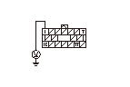
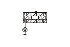
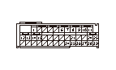
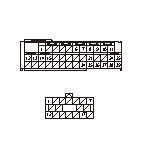

SRS DTC 85-61, 85-62
DTC 85-61:
OPDSユニットのシグナル系の異常
DTC 85-62:
OPDSユニットの返信データ規定外
DTCの確認
1-1
DTCをクリアする
1-2
イグニッション スイッチをON（
II
）にし、10秒以上待つ
1-3
DTCを確認する
◆ DTC 85-61または85-62を表示するか
YES
-
ステップ
2
へ進む
NO
-
一過性故障の点検を行う
ヒューズの点検
2-1
ヒューズ ボックスのNo.8（7.5A）ヒューズを点検する
◆ ヒューズは正常か
YES
-
ステップ
3
へ進む
NO
-
ヒューズ ボックスのNo.8（7.5A）ヒューズを交換し、再度不良になる場合はヒューズ ボックスのNo.8（7.5A）ヒューズ系回路のボディ短絡（ヒューズ ボックスを交換）
OPDSユニットの電源確認
3-1
イグニッション スイッチをOFFにする
3-2
OPDSユニット ハーネスDカプラ（18P）の接続をOPDSユニットから外す
3-3
イグニッション スイッチをON（
II
）にする
3-4
OPDSユニット ハーネスDカプラ（18P）のNo.1端子とボディ アース間の電圧を測定する
◆ バッテリ電圧か
YES
-
ステップ
4
へ進む
NO
-
ヒューズ ボックスのNo.8（7.5A）ヒューズとOPDSユニット ハーネスDカプラ（18P）のNo.1端子間の断線（インストルメント ワイヤ ハーネスを交換）

OPDSユニットとボディ アース間の断線点検
4-1
イグニッション スイッチをOFFにする
4-2
OPDSユニット ハーネスDカプラ（18P）のNo.12端子とボディ アース間の抵抗を測定する
◆ 0－0.1Ωか
YES
-
ステップ
5
へ進む
NO
-
OPDSユニット ハーネスDカプラ（18P）のNo.12端子とボディ アース間の断線（OPDSユニット ハーネスまたはフロア ワイヤ ハーネス交換）またはG603のアース不良

OPDSユニットとSRSユニット間のボディ短絡点検
5-1
バッテリ ケーブルの接続を外し、3分待つ
5-2
SRSユニットBカプラ（39P）の接続をSRSユニットから外す
5-3
SRSユニットBカプラ（39P）のNo.1端子とボディ アース間の抵抗を測定する
◆ 1MΩ以上か
YES
-
ステップ
6
へ進む
NO
-
SRSユニットBカプラ（39P）のNo.1端子とOPDSユニット ハーネスDカプラ（18P）のNo.7端子間の断線（フロア ワイヤ ハーネスまたはOPDSユニット ハーネスを交換）

OPDSユニットとSRSユニット間の断線点検
6-1
OPDSユニット ハーネスDカプラ（18P）のNo.7端子とSRSユニットBカプラ（39P）のNo.1端子間の抵抗を測定する
◆ 0－1.0Ωか
YES
-
ステップ
7
へ進む
NO
-
SRSユニットBカプラ（39P）のNo.1端子とOPDSユニット ハーネスDカプラ（18P）のNo.7端子間の断線（フロア ワイヤ ハーネスまたはOPDSユニット ハーネスを交換）またはG603のアース不良

OPDSユニットとSRSユニット間の電源短絡点検
7-1
バッテリ ケーブルを接続する
7-2
イグニッション スイッチをON（
II
）にする
7-3
SRSユニットBカプラ（39P）のNo.1端子とボディ アース間の電圧を測定する
◆ 0－0.5Vか
YES
-
ステップ
8
へ進む
NO
-
SRSユニットBカプラ（39P）のNo.1端子とOPDSユニット ハーネスDカプラ（18P）のNo.7端子間の電源短絡（フロア ワイヤ ハーネスまたはOPDSユニット ハーネスを交換）
OPDSユニットの交換確認
8-1
OPDSユニットを交換する
8-2
OPDSユニットの初期化をする
8-3
DTCをクリアする
8-4
DTCを確認する
◆ DTC 85-61または85-62を表示するか
YES
-
SRSユニットを交換する
NO
-
現在正常に復帰している